B. Cheat sheet
| Syntax | Description | Example |
1 2 8 16 | durations |
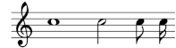
|
c4. c4.. | augmentation dots |
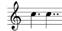
|
c d e f g a b | scale |
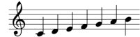
|
fis bes | alteration |
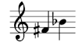
|
\clef treble \clef bass | clefs |
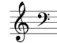
|
\time 3/4 \time 4/4 | time signature |
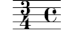
|
r4 r8 | rest |
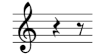
|
d ~ d | tie |
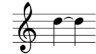
|
\key es \major | key signature |
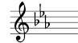
|
note' | raise octave |
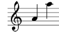
|
note, | lower octave |
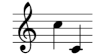
|
c( d e) | slur |
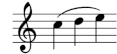
|
c\( c( d) e\) | phrasing slur |
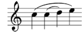
|
a8[ b] | beam |
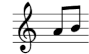
|
<< \new Staff … >> | more staves |
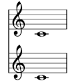
|
c-> c-. | articulations |
![[image of music]](../7f/lily-f6eef2e9.png)
|
c2\mf c\sfz | dynamics |
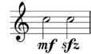
|
a\< a a\! | crescendo |
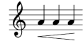
|
a\> a a\! | decrescendo |
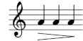
|
< > | chord |
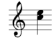
|
\partial 8 | pickup / upbeat |
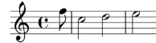
|
\tuplet 3/2 {f g a} | triplets |
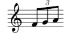
|
\grace | grace notes |
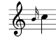
|
\lyricmode { twinkle } | entering lyrics | twinkle |
\new Lyrics | printing lyrics |
|
twin -- kle | lyric hyphen |
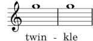
|
\chordmode { c:dim f:maj7 } | chords |
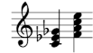
|
\new ChordNames | printing chord names |
|
<<{e f} \\ {c d}>> | polyphony |
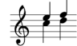
|
s4 s8 s16 | spacer rests | |
Andere talen: català, deutsch, español, français, italiano, 日本語.
About automatic language selection.